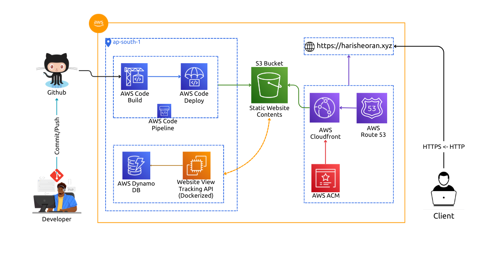

End-to-End Production-Grade Deployment: Advanced DevOps Practices on AWS

About Project
Developed a professional resume website hosted on AWS, utilizing various AWS services for robustness and security.
Leveraged AWS CloudFront CDN for efficient content delivery and AWS S3 bucket for hosting static website content, ensuring scalability and reliability.
Implemented HTTPS protocol for enhanced security, supported by SSL/TLS certificate managed by AWS Certificate Manager.
Managed DNS with AWS Route 53 for seamless domain management and resolution.
Engineered a view tracking API using Go language, integrated with AWS DynamoDB for efficient data storage and retrieval.
Containerized the View Tracking API using Docker for streamlined deployment and scalability.
Orchestrated deployment pipeline on AWS utilizing AWS CodePipeline, CodeBuild, and CodeDeploy for automated building, testing, and deployment of the API Docker image.
Employed various AWS services including IAM Roles and IAM Users for secure access management and authorization.
Now our website is publicly accessible, why do we need the Cloudfront.
CloudFront is a Content Delivery Network(CDN) service also provided by AWS, it enables users to deliver content globally with low latency, high data transfer speed, and securely delivered.
leveraging AWS edge locations around the world to cache and deliver content from the nearest location to the user, reducing latency and improving performance.
It also offers features such as SSL/TLS encryption, access controls, and real-time metrics.
Issue : Our Website is not secure, it is using http protocol
First, check the Block Public Access on S3 bucket.
Create a SSL certificate using AWS Certificate Manager, create this certificate in North Verginia region.
Create a CNAME record for this certificate in Hosted Zone.
Create Cloudfront Distribution
After creating the CDN, add the Bucket policy (CDN will provide you after creating it) to S3 bucket, so that you can not view content of S3 bucket without bypassing the CDN.
Create CNAME record with SSL certificate while creating the CDN, so it can use HTTPS protocol.
Visit the CDN url, our resume website is live now, but it is not using our Domain name.
Using Go lang as base image, download the dependencies and build a executable file and run it.
FROM golang:1.22
WORKDIR /app
COPY go.* ./
RUN go mod download
COPY . .
RUN mkdir build
RUN CGO_ENABLED=0 GOOS=linux go build -a -installsuffix cgo -o build/main .
EXPOSE 4000
ENTRYPOINT [ "./build/main" ]
My learning & mistakes during building docker image
Localhost is the localhost of docker itself not the host machine.
Multistage Docker build issue - Can’t access the shell of container.
Docker Volume helps a lot
In development to sync local directory with container
Named Volume (Anonymous Volumes) help in not syncing the container’s specific directory
Purpose: To build the API image and push to Docker Hub Registry.
Create an IAM Role.
Create a Group for the project and attach the policy for AWS CODEBUILD full access.
Creae a user and add to the group and attach Policies.
List IAM Role (To attach it in Code build service role)
To pass a role to a service (here we are giving role to our CodeBuild service).
Pipeline: Checkout the code from Github Repository and use Dockerfile to build the image and push to Docker Hub using Docker Credentials.
Connect to the Github account.
Need a Service Role -
WHY? : So that CodeBuild can perform action on your behalf.
How it works: First for which service you need this role and give it permission(Attach policies) for what it is going to do like in our case it need to access AWS Systems Manager Parameter store.
Buildspec file: Define how your CI is going to do.
Steps:
Login to Docker Hub, build the image and push the image
Credentials: Store them in AWS Systems Manager Parameter store.
Logs are very important, so use the Cloudwatch logs.
Purpose: To deploy and run the latest code of application on target compute platform.
Is it looking for change in the codebase?
Is it invoked by AWS Pipeline?
Create Target Compute > EC2 instance.
First, go to CodeDeploy > Applications > Create application and create an application, choose the EC2 as compute platform.
Create Deployment Group.
Install the CodeDeploy agent
Why do we need CodeDeploy agent? ; It automates code deployments to any instance, including Amazon EC2 instances and instances running on EC2.
Attach Tags to the EC2 instance. WHY? : Create all the resources of one project under one tag, helps in filtering the AWS resources. Here, we need tag for the code deploy service to id the target EC2 instance, we can assign single or multiple ec2 instances using tags.
Now, we need a permissions -
As, our target EC2 instance going to talk to Code Depoly and vice versa.
So, create two service roles, for Code Deploy and EC2.
Add another IAM policy to our group to view Tags Keys and values.
Finally create the Deployment.
Upload our .env file on EC2 using SSH . It stores the AWS Credentials as API is using Dynamo DB.
Depolyment Group
Create a Deployment Group.
Create a appspec.yml
Here, we define how we want to deploy and run the application, need two scripts to start and stop the container.
AWS CodeBuild
CodeDeploy agent was not able to receive the lifecycle event. Check the CodeDeploy agent logs on your host and make sure the agent is running and can connect to the CodeDeploy server.
SOLUTION:
Check Logs at /var/log/aws/codedeploy-agent
Restart codedeploy agent service
Check IAM role policies for Code Deploy and EC2
AWS CodePipeline
Unable to create role
for primary source and source version arn:aws:s3:::codepipeline-ap-south-1-972545925755/view_tracking_pipeli/SourceArti/Od8R23
AWS CodeDeploy during running the CodePipeline
Same Issue with Code Deploy - Unable to access the artifact with Amazon S3 object key ‘view_tracking_pipeli/BuildArtif/mOIyXyD’ located in the Amazon S3 artifact bucket ‘codepipeline-ap-south-1-972545925755’. The provided role does not have sufficient permissions.
Cache Invalidation issue of CloudFront
Cache Invaildation Issue: Latest changes are unavailable to the users because the contents are cached at the CloudFront edge locations. The default caching policy keeps the contents cached for up to 24 hours (TTL).